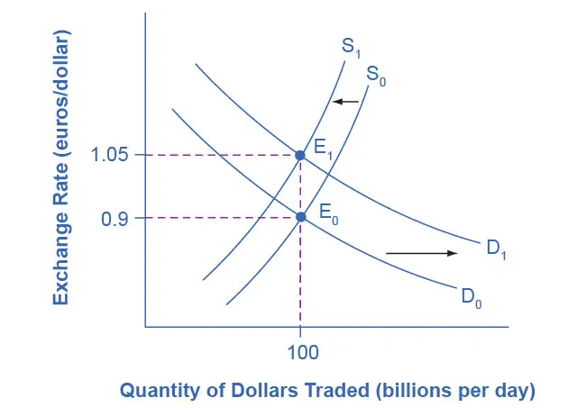
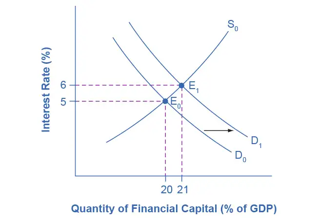
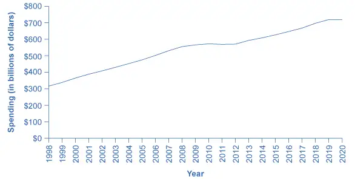

Chapter 31: The Impacts of Government Borrowing¶
Introduction¶
Bring It Home: Financing Higher Education
On November 8, 1965, President Lyndon B. Johnson signed The Higher Education Act of 1965 into law. With a stroke of the pen, he implemented what we know as the financial aid, work study, and student loan programs to help Americans pay for a college education. In his remarks, the President said:
“Here the seeds were planted from which grew my firm conviction that for the individual, education is the path to achievement and fulfillment; for the Nation, it is a path to a society that is not only free but civilized; and for the world, it is the path to peace—for it is education that places reason over force.”
This Act, he said, "is responsible for funding higher education for millions of Americans. It is the embodiment of the United States’ investment in ‘human capital’." Since Johnson signed the Act into law, the government has renewed it several times.
The purpose of The Higher Education Act of 1965 was to build the country’s human capital by creating educational opportunity for millions of Americans. The three criteria that the government uses to judge eligibility are income, full-time or part-time attendance, and the cost of the institution. According to education.org, in the 2011–2012 school year, over 80% of all full-time college students received some form of federal financial aid; 43% received grants; and another 41% of students aged 15–23 received federal government student loans. The budget to support financial aid has increased not only because of more enrollment, but also because of increased tuition and fees for higher education. In 2022, the government generally took an approach of increasing student aid through programs such as Pell Grant expansion, while also taking steps to ease student loan debt.
Chapter Outline: Introduction to the Impacts of Government Borrowing
In this chapter, you will learn about:
- How Government Borrowing Affects Investment and the Trade Balance
- Fiscal Policy, Investment, and Economic Growth
- How Government Borrowing Affects Private Saving
- Fiscal Policy and the Trade Balance
Governments have many competing demands for financial support. Any spending should be tempered by fiscal responsibility and by looking carefully at the spending’s impact. When a government spends more than it collects in taxes, it runs a budget deficit. It then needs to borrow. When government borrowing becomes especially large and sustained, it can substantially reduce the financial capital available to private sector firms, as well as lead to trade imbalances and even financial crises.
The Government Budgets and Fiscal Policy chapter introduced the concepts of deficits and debt, as well as how a government could use fiscal policy to address recession or inflation. This chapter begins by building on the national savings and investment identity, which we first introduced in The International Trade and Capital Flows chapter, to show how government borrowing affects firms’ physical capital investment levels and trade balances. A prolonged period of budget deficits may lead to lower economic growth, in part because the funds that the government borrows to fund its budget deficits are typically no longer available for private investment. Moreover, a sustained pattern of large budget deficits can lead to disruptive economic patterns of high inflation, substantial inflows of financial capital from abroad, plummeting exchange rates, and heavy strains on a country’s banking and financial system.
31.1 How Government Borrowing Affects Investment and the Trade Balance¶
Learning Objectives
By the end of this section, you will be able to:
- Explain the national saving and investment identity in terms of demand and supply
- Evaluate the role of budget surpluses and trade surpluses in national saving and investment identity
When governments are borrowers in financial markets, there are three possible sources for the funds from a macroeconomic point of view: (1) households might save more; (2) private firms might borrow less; and (3) the additional funds for government borrowing might come from outside the country, from foreign financial investors. Let’s begin with a review of why one of these three options must occur, and then explore how interest rates and exchange rates adjust to these connections.
The National Saving and Investment Identity¶
The national saving and investment identity, which we first introduced in The International Trade and Capital Flows chapter, provides a framework for showing the relationships between the sources of demand and supply in financial capital markets. The identity begins with a statement that must always hold true: the quantity of financial capital supplied in the market must equal the quantity of financial capital demanded.
The U.S. economy has two main sources for financial capital: private savings from inside the U.S. economy and public savings.
These include the inflow of foreign financial capital from abroad. The inflow of savings from abroad is, by definition, equal to the trade deficit, as we explained in The International Trade and Capital Flows chapter. We can write this inflow of foreign investment capital as imports (M) minus exports (X). There are also two main sources of demand for financial capital: private sector investment (I) and government borrowing. Government borrowing in any given year is equal to the budget deficit, which we can write as the difference between government spending (G) and net taxes (T). Let’s call this equation 1.
Governments often spend more than they receive in taxes and, therefore, public savings (T – G) is negative. This causes a need to borrow money in the amount of (G – T) instead of adding to the nation’s savings. If this is the case, we can view governments as demanders of financial capital instead of suppliers. In algebraic terms, we can rewrite the national savings and investment identity like this:
Let’s call this equation 2. We must accompany a change in any part of the national saving and investment identity by offsetting changes in at least one other part of the equation because we assume that the equality of quantity supplied and quantity demanded always holds. If the government budget deficit changes, then either private saving or investment or the trade balance—or some combination of the three—must change as well. Figure 31.2 shows the possible effects.
![Following from the national savings and investment identity, charts (a) and (b) show what happens to investment, private savings, and the trade deficit when the budget deficit rises (or the budget surplus falls). (a) If the budget deficit rises (or the government budget surplus falls), the results could be (1) domestic private investment falls or (2) private savings rise or (3) the trade deficit increases (or a trade surplus diminishes). The opposite results of each are achieved when the budget deficit falls (or the budget surplus rises) as shown in image (b).](img/cnx-econ3e-c31-009.webp)
What about Budget Surpluses and Trade Surpluses?¶
The national saving and investment identity must always hold true because, by definition, the quantity supplied and quantity demanded in the financial capital market must always be equal. However, the formula will look somewhat different if the government budget is in deficit rather than surplus or if the balance of trade is in surplus rather than deficit. For example, in 1999 and 2000, the U.S. government had budget surpluses, although the economy was still experiencing trade deficits. When the government was running budget surpluses, it was acting as a saver rather than a borrower, and supplying rather than demanding financial capital. As a result, we would write the national saving and investment identity during this time as:
Let's call this equation 3. Notice that this expression is mathematically the same as equation 2 except the savings and investment sides of the identity have simply flipped sides.
During the 1960s, the U.S. government was often running a budget deficit, but the economy was typically running trade surpluses. Since a trade surplus means that an economy is experiencing a net outflow of financial capital, we would write the national saving and investment identity as:
Instead of the balance of trade representing part of the supply of financial capital, which occurs with a trade deficit, a trade surplus represents an outflow of financial capital leaving the domestic economy and invested elsewhere in the world.
We assume that the point to these equations is that the national saving and investment identity always hold. When you write these relationships, it is important to engage your brain and think about what is on the supply and demand side of the financial capital market before you start your calculations.
As you can see in Figure 31.3, the Office of Management and Budget shows that the United States has consistently run budget deficits since 1977, with the exception of 1999 and 2000. What is alarming is the dramatic increase in budget deficits that has occurred since 2008, which in part reflects declining tax revenues and increased safety net expenditures due to the Great Recession. While deficits were controlled as the economy began to recover in the mid-2010s, the budget deficit increased again in 2020 during the pandemic, and forecasters expect deficits to remain high for the foreseeable future. (Recall that T is net taxes. When the government must transfer funds back to individuals for safety net expenditures like Social Security and unemployment benefits, budget deficits rise.) These deficits have implications for the future health of the U.S. economy.
![This graph is a bar chart illustrating for each year whether the U.S. federal government runs a budget surplus or a budget deficit. The y-axis measures the federal surplus or deficit, in billions of dollars, from –3,500 billion dollars, or –3.5 trillion dollars, to 500 billion dollars, in increments of 500 billion dollars. The x-axis shows years, from 1952 to 2020. From 1952 to the early 1980s, the budget is either balanced, or shows a very small deficit, of no more than around 50 billion dollars. There are deficits in the 1980s and early 1990s, but from 1997 to 2001 there is a budget surplus. There are budget deficits in all the remaining years. They are over 1,000 billion dollars 2009 to 2012, then the deficits shrink to under 500 billion in 2015, then deficits grow again yearly, to nearly 1,000 billion dollars in 2019, and over 3,000 billion, or 3 trillion, dollars in 2020.](img/cnx-econ3ev1-2-c31-03.webp)
A rising budget deficit may result in a fall in domestic investment, a rise in private savings, or a rise in the trade deficit. The following modules discuss each of these possible effects in more detail.
31.2 Fiscal Policy and the Trade Balance¶
Learning Objectives
By the end of this section, you will be able to:
- Discuss twin deficits as they related to budget and trade deficit
- Explain the relationship between budget deficits and exchange rates
- Explain the relationship between budget deficits and inflation
- Identify causes of recessions
Government budget balances can affect the trade balance. As The Keynesian Perspective chapter discusses, a net inflow of foreign financial investment always accompanies a trade deficit, while a net outflow of financial investment always accompanies a trade surplus. One way to understand the connection from budget deficits to trade deficits is that when government creates a budget deficit with some combination of tax cuts or spending increases, it will increase aggregate demand in the economy, and some of that increase in aggregate demand will result in a higher level of imports. A higher level of imports, with exports remaining fixed, will cause a larger trade deficit. That means foreigners’ holdings of dollars increase as Americans purchase more imported goods. Foreigners use those dollars to invest in the United States, which leads to an inflow of foreign investment. One possible source of funding our budget deficit is foreigners buying Treasury securities that the U.S. government sells, thus a trade deficit often accompanies a budget deficit.
Twin Deficits?¶
In the mid-1980s, it was common to hear economists and even newspaper articles refer to the twin deficits, as the budget deficit and trade deficit both grew substantially. Figure 31.4 shows the pattern. The federal budget deficit went from 2.6% of GDP in 1981 to 5.1% of GDP in 1985—a drop of 2.5% of GDP. Over that time, the trade deficit moved from 0.5% in 1981 to 2.9% in 1985—a drop of 2.4% of GDP. In the mid-1980s an inflow of foreign investment capital matched, the considerable increase in government borrowing, so the government budget deficit and the trade deficit moved together.
![This graph illustrates two lines: the budget deficit and trade deficit, as a percentage of GDP, over time. The y-axis measures the percentage of GDP, from –16 to 4 percent, in increments of 2 percent. The x-axis measures years, from 1980 to 2020. Notably, both lines are almost always negative. The budget deficit line is nearly always negative, representing a budget deficit. In 1980 it starts at around –2 percent of GDP, decreases to –5 percent in 1985, then increases to positive 2 percent, a budget surplus, in 2000. The budget deficit line then decreases to deficit, reaching –10 percent in 2009. The line remains in a deficit until 2020. The line increases to –2 percent in 2015, corresponding with a decrease in gross private savings, then the line decreases, and the deficit increases to –15 percent in 2020. The trade deficit line is always negative, fluctuating between around –0.5 percent of GDP in 1980, to a low of –3 percent in 1987, a low of around –6 percent in 2005, and a low of –4 percent in 2020.](img/cnx-econ3ev1-2-c31-08.webp)
Of course, no one should expect the budget deficit and trade deficit to move in lockstep, because the other parts of the national saving and investment identity—investment and private savings—will often change as well. In the late 1990s, for example, the government budget balance turned from deficit to surplus, but the trade deficit remained large and growing. During this time, the inflow of foreign financial investment was supporting a surge of physical capital investment by U.S. firms. In the first half of the 2000s, the budget and trade deficits again increased together, but in 2009, the budget deficit increased while the trade deficit declined. Through the 2010s, as there were bigger changes in the budget deficit, the trade deficit remained stable. The budget deficit and the trade deficits are related to each other, but they are more like cousins than twins.
Budget Deficits and Exchange Rates¶
Exchange rates can also help to explain why budget deficits are linked to trade deficits. Figure 31.5 shows a situation using the exchange rate for the U.S. dollar, measured in euros. At the original equilibrium (E0), where the demand for U.S. dollars (D0) intersects with the supply of U.S. dollars (S0) on the foreign exchange market, the exchange rate is 0.9 euros per U.S. dollar and the equilibrium quantity traded in the market is $100 billion per day. Then the U.S. budget deficit rises and foreign financial investment provides the source of funds for that budget deficit.
International financial investors, as a group, will demand more U.S. dollars on foreign exchange markets to purchase the U.S. government bonds, and they will supply fewer of the U.S. dollars that they already hold in these markets. Demand for U.S. dollars on the foreign exchange market shifts from D0 to D1 and the supply of U.S. dollars falls from S0 to S1. At the new equilibrium (E1), the exchange rate has appreciated to 1.05 euros per dollar while, in this example, the quantity of dollars traded remains the same.

A stronger exchange rate, of course, makes it more difficult for exporters to sell their goods abroad while making imports cheaper, so a trade deficit (or a reduced trade surplus) results. Thus, a budget deficit can easily result in an inflow of foreign financial capital, a stronger exchange rate, and a trade deficit.
You can also imagine interest rates are driving the exchange rate appreciation. As we explained earlier in Figure 31.8, a budget deficit increases demand in markets for domestic financial capital, raising the domestic interest rate. A higher interest rate will attract an inflow of foreign financial capital, and appreciate the exchange rate in response to the increase in demand for U.S. dollars by foreign investors and a decrease in supply of U. S. dollars. Because of higher interest rates in the United States, Americans find U.S. bonds more attractive than foreign bonds. When Americans are buying fewer foreign bonds, they are supplying fewer U.S. dollars. U.S. dollar appreciation leads to a larger trade deficit (or reduced surplus). The connections between inflows of foreign investment capital, interest rates, and exchange rates are all just different ways of drawing the same economic connections: a larger budget deficit can result in a larger trade deficit, although do not expect the connection to be one-to-one.
From Budget Deficits to International Economic Crisis¶
We lay out step-by-step the economic story of how an outflow of international financial capital can cause a deep recession in the Exchange Rates and International Capital Flows chapter. When international financial investors decide to withdraw their funds from a country like Turkey, they increase the supply of the Turkish lira and reduce the demand for lira, depreciating the lira exchange rate. When firms and the government in a country like Turkey borrow money in international financial markets, they typically do so in stages. First, banks in Turkey borrow in a widely used currency like U.S. dollars or euros, then convert those U.S. dollars to lira, and then lend the money to borrowers in Turkey. If the lira's exchange rate value depreciates, then Turkey’s banks will find it impossible to repay the international loans that are in U.S. dollars or euros.
The combination of less foreign investment capital and banks that are bankrupt can sharply reduce aggregate demand, which causes a deep recession. Many countries around the world have experienced this kind of recession: along with Turkey in 2002, Mexico followed this general pattern in 1995, Thailand and countries across East Asia in 1997–1998, Russia in 1998, and Argentina in 2002. In many of these countries, large government budget deficits played a role in setting the stage for the financial crisis. A moderate increase in a budget deficit that leads to a moderate increase in a trade deficit and a moderate appreciation of the exchange rate is not necessarily a cause for concern. However, beyond some point that is hard to define in advance, a series of large budget deficits can become a cause for concern among international investors.
One reason for concern is that extremely large budget deficits mean that aggregate demand may shift so far to the right as to cause high inflation. The example of Turkey is a situation where very large budget deficits brought inflation rates well into double digits. In addition, very large budget deficits at some point begin to raise a fear that the government would not repay the borrowing. In the last 100 years, the government of Turkey has been unable to pay its debts and defaulted on its loans four times. Over the past 175 years, Brazil’s government has been unable to pay its debts and defaulted on its loans seven times; Venezuela, nine times; and Argentina, five times. The risk of high inflation or a default on repaying international loans will worry international investors, since both factors imply that the rate of return on their investments in that country may end up lower than expected. If international investors start withdrawing the funds from a country rapidly, the scenario of less investment, a depreciated exchange rate, widespread bank failure, and deep recession can occur. The following Clear It Up feature explains other impacts of large deficits.
Clear It Up: What are the risks of chronic large deficits in the United States?
If a government runs large budget deficits for a sustained period of time, what can go wrong? According to a recent Brookings Institution report, a key risk of a large budget deficit is that government debt may grow too high compared to the country’s GDP growth. As debt grows, the national savings rate will decline, leaving less available in financial capital for private investment. The impact of chronically large budget deficits is as follows:
- As the population ages, there will be an increasing demand for government services that may cause higher government deficits. Government borrowing and its interest payments will pull resources away from domestic investment in human capital and physical capital that is essential to economic growth.
- Interest rates may start to rise so that the cost of financing government debt will rise as well, creating pressure on the government to reduce its budget deficits through spending cuts and tax increases. These steps will be politically painful, and they will also have a contractionary effect on aggregate demand in the economy.
- Rising percentage of debt to GDP will create uncertainty in the financial and global markets that might cause a country to resort to inflationary tactics to reduce the real value of the debt outstanding. This will decrease real wealth and damage confidence in the country’s ability to manage its spending. After all, if the government has borrowed at a fixed interest rate of, say, 5%, and it lets inflation rise above that 5%, then it will effectively be able to repay its debt at a negative real interest rate.
The conventional reasoning suggests that the relationship between sustained deficits that lead to high levels of government debt and long-term growth is negative. How significant this relationship is, how big an issue it is compared to other macroeconomic issues, and the direction of causality, is less clear.
What remains important to acknowledge is that the relationship between debt and growth is negative and that for some countries, the relationship may be stronger than in others. It is also important to acknowledge the direction of causality: does high debt cause slow growth, slow growth cause high debt, or are both high debt and slow growth the result of third factors? In our analysis, we have argued simply that high debt causes slow growth. There may be more to this debate than we have space to discuss here.
Using Fiscal Policy to Address Trade Imbalances¶
If a nation is experiencing the inflow of foreign investment capital associated with a trade deficit because foreign investors are making long-term direct investments in firms, there may be no substantial reason for concern. After all, many low-income nations around the world would welcome direct investment by multinational firms that ties them more closely into the global networks of production and distribution of goods and services. In this case, the inflows of foreign investment capital and the trade deficit are attracted by the opportunities for a good rate of return on private sector investment in an economy.
However, governments should beware of a sustained pattern of high budget deficits and high trade deficits. The danger arises in particular when the inflow of foreign investment capital is not funding long-term physical capital investment by firms, but instead is short-term portfolio investment in government bonds. When inflows of foreign financial investment reach high levels, foreign financial investors will be on the alert for any reason to fear that the country’s exchange rate may decline or the government may be unable to repay what it has borrowed on time. Just as a few falling rocks can trigger an avalanche; a relatively small piece of bad news about an economy can trigger an enormous outflow of short-term financial capital.
Reducing a nation’s budget deficit will not always be a successful method of reducing its trade deficit, because other elements of the national saving and investment identity, like private saving or investment, may change instead. In those cases when the budget deficit is the main cause of the trade deficit, governments should take steps to reduce their budget deficits, lest they make their economy vulnerable to a rapid outflow of international financial capital that could bring a deep recession.
31.3 How Government Borrowing Affects Private Saving¶
Learning Objectives
By the end of this section, you will be able to:
- Apply Ricardian equivalence to evaluate how government borrowing affects private saving
- Interpret a graphic representation of Ricardian equivalence
A change in government budgets may impact private saving. Imagine that people watch government budgets and adjust their savings accordingly. For example, whenever the government runs a budget deficit, people might reason: “Well, a higher budget deficit means that I’m just going to owe more taxes in the future to pay off all that government borrowing, so I’ll start saving now.” If the government runs budget surpluses, people might reason: “With these budget surpluses (or lower budget deficits), interest rates are falling, so that saving is less attractive. Moreover, with a budget surplus the country will be able to afford a tax cut sometime in the future. I won’t bother saving as much now.”
The theory that rational private households might shift their saving to offset government saving or borrowing is known as Ricardian equivalence because the idea has intellectual roots in the writings of the early nineteenth-century economist David Ricardo (1772–1823). If Ricardian equivalence holds completely true, then in the national saving and investment identity, any change in budget deficits or budget surpluses would be completely offset by a corresponding change in private saving. As a result, changes in government borrowing would have no effect at all on either physical capital investment or trade balances.
In practice, the private sector only sometimes and partially adjusts its savings behavior to offset government budget deficits and surpluses. Figure 31.6 shows the patterns of U.S. government budget deficits and surpluses and the rate of private saving—which includes saving by both households and firms—since 1980. The connection between the two is not at all obvious. In the mid-1980s, for example, government budget deficits were quite large, but there is no corresponding surge of private saving. However, when budget deficits turn to surpluses in the late 1990s, there is a simultaneous decline in private saving. When budget deficits got very large in 2008 and 2009, there was another a rise in saving. When the deficit increased again in 2020, saving jumped up as well. A variety of statistical studies based on the U.S. experience suggests that when government borrowing increases by $1, private saving rises by about 30 cents. A World Bank study from the late 1990s, looking at government budgets and private saving behavior in countries around the world, found a similar result.
![This graph illustrates two lines: gross private savings and budget deficit or surplus as a percentage of GDP, over time. The y-axis shows the percentage of GDP, from –20 to 35, in increments of 5 percent. The x-axis shows years, from 1980 to 2020. The two lines generally move in opposite directions, as the government budget deficit increases, meaning the line becomes more negative, gross private savings increases, and as the government budget deficit decreases, meaning the line becomes more positive, gross private savings decreases. Gross private savings is always positive and is above the budget deficit or surplus line. It starts in 1980 at around 22 percent of GDP, and fluctuates over time between 17 and 25 percent, until 2020. It peaks in the mid-1980s at around 25 percent and is at a low of around 15 percent in 2000. The budget deficit or surplus line is nearly always negative, representing a budget deficit. In 1980 it starts at around –2 percent of GDP, decreases to –5 percent in 1985, then increases to positive 1 percent, a budget surplus, in 2000, which corresponds to when gross private savings is at its lowest. The budget deficit or surplus line then decreases to deficit, reaching –10 percent in 2009, which is when gross private savings is at one of its peaks of 25 percent. The line remains in a deficit until 2020. The line increases to –2 percent in 2015, corresponding with a decrease in gross private savings, then the line decreases, and the deficit increases, to –15 percent in 2020. In 2020, gross private savings spikes to 30 percent.](img/cnx-econ3ev1-2-c31-07.webp)
Private saving does increase to some extent when governments run large budget deficits, and private saving falls when governments reduce deficits or run large budget surpluses. However, the offsetting effects of private saving compared to government borrowing are much less than one-to-one. In addition, this effect can vary a great deal from country to country, from time to time, and over the short and the long run.
If the funding for a larger budget deficit comes from international financial investors, then a trade deficit may accompany a budget deficit. In some countries, this pattern of twin deficits has set the stage for international financial investors first to send their funds to a country and cause an appreciation of its exchange rate and then to pull their funds out and cause a depreciation of the exchange rate and a financial crisis as well. It depends on whether funding comes from international financial investors.
31.4 Fiscal Policy, Investment, and Economic Growth¶
Learning Objectives
By the end of this section, you will be able to:
- Explain crowding out and its effect on physical capital investment
- Explain the relationship between budget deficits and interest rates
- Identify why economic growth is tied to investments in physical capital, human capital, and technology
The underpinnings of economic growth are investments in physical capital, human capital, and technology, all set in an economic environment where firms and individuals can react to the incentives provided by well-functioning markets and flexible prices. Government borrowing can reduce the financial capital available for private firms to invest in physical capital. However, government spending can also encourage certain elements of long-term growth, such as spending on roads or water systems, on education, or on research and development that creates new technology.
Crowding Out Physical Capital Investment¶
A larger budget deficit will increase demand for financial capital. If private saving and the trade balance remain the same, then less financial capital will be available for private investment in physical capital. When government borrowing soaks up available financial capital and leaves less for private investment in physical capital, economists call the result crowding out.
To understand the potential impact of crowding out, consider the U.S. economy's situation before the exceptional circumstances of the recession that started in late 2007. In 2005, for example, the budget deficit was roughly 3% of GDP. Private investment by firms in the U.S. economy has hovered in the range of 14% to 18% of GDP in recent decades. However, in any given year, roughly half of U.S. investment in physical capital just replaces machinery and equipment that has worn out or become technologically obsolete. Only about half represents an increase in the total quantity of physical capital in the economy. Investment in new physical capital in any year is about 7% to 9% of GDP. In this situation, even U.S. budget deficits in the range of 3% of GDP can potentially crowd out a substantial share of new investment spending. Conversely, a smaller budget deficit (or an increased budget surplus) increases the pool of financial capital available for private investment.
Link It Up
Visit this website to view the “U.S. Debt Clock.”
Figure 31.7 shows the patterns of U.S. budget deficits and private investment since 1980. If greater government deficits lead to less private investment in physical capital, and reduced government deficits or budget surpluses lead to more investment in physical capital, these two lines should move up and down simultaneously. This pattern occurred in the late 1990s and early 2000s. The U.S. federal budget went from a deficit of 2.2% of GDP in 1995 to a budget surplus of 2.4% of GDP in 2000—a swing of 4.6% of GDP. From 1995 to 2000, private investment in physical capital rose from 15% to 18% of GDP—a rise of 3% of GDP. Then, when the U.S. government again started running budget deficits in the early 2000s, less financial capital became available for private investment, and the rate of private investment fell back to about 15% of GDP by 2003. However, in more recent years, in the 2010s after the economy recovered from the Great Recession, private investment as a share of GDP increased even as deficits slightly worsened, especially around 2016. And while the deficit increased substantially in 2020, private investment as a share of GDP did not.
![This graph illustrates two lines: private investment as a percentage of GDP and budget deficits or surpluses as a percentage of GDP. Each is measured over time. The y-axis shows the percentage of GDP, from –15 to 25, in increments of 5 percent. The x-axis shows years, from 1980 to 2020. The two lines generally move together. Private investment is always positive and is above the budget deficit or surplus line. It starts in 1980 at around 19 percent of GDP and fluctuates over time between 15 and 20 percent. It peaks at 20 percent in 2000 and is at a low of 15 percent in 2009. The budget deficit or surplus line is nearly always negative, representing a budget deficit. In 1980 it starts at around –2 percent of GDP, decreases to – 5 percent in 1985, then increases to positive 1 percent, a budget surplus, in 2000, which corresponds to when private investment is at its peak. The budget deficit or surplus line then decreases to deficit, reaching –10 percent in 2009, which is when private investment is at its lowest. The line remains in a deficit until 2020. The line increases to –2 percent in 2015, corresponding with an increase in private investment, then the line decreases, and the deficit increases, to –15 percent in 2020.](img/cnx-econ3ev1-2-c31-04.webp)
This argument does not claim that a government's budget deficits will exactly shadow its national rate of private investment; after all, we must account for private saving and inflows of foreign financial investment. In the mid-1980s, for example, government budget deficits increased substantially without a corresponding drop off in private investment. In 2009, nonresidential private fixed investment dropped by $300 billion from its previous level of $1,941 billion in 2008, primarily because, during a recession, firms lack both the funds and the incentive to invest. Investment growth between 2009 and 2014 averaged approximately 5.9% to $2,210.5 billion—only slightly above its 2008 level, according to the Bureau of Economic Analysis. During that same period, interest rates dropped from 3.94% to less than a quarter percent as the Federal Reserve took dramatic action to prevent a depression by increasing the money supply through lowering short-term interest rates. The "crowding out" of private investment due to government borrowing to finance expenditures appears to have been suspended after the Great Recession.
The Interest Rate Connection¶
Assume that government borrowing of substantial amounts will have an effect on the quantity of private investment. How will this affect interest rates in financial markets? In Figure 31.8, the original equilibrium (E0) where the demand curve (D0) for financial capital intersects with the supply curve (S0) occurs at an interest rate of 5% and an equilibrium quantity equal to 20% of GDP. However, as the government budget deficit increases, the demand curve for financial capital shifts from D0 to D1. The new equilibrium (E1) occurs at an interest rate of 6% and an equilibrium quantity of 21% of GDP.

A survey of economic studies on the connection between government borrowing and interest rates in the U.S. economy suggests that an increase of 1% in the budget deficit will lead to a rise in interest rates of between 0.5 and 1.0%, other factors held equal. In turn, a higher interest rate tends to discourage firms from making physical capital investments. One reason government budget deficits crowd out private investment, therefore, is the increase in interest rates. There are, however, economic studies that show a limited connection between the two (at least in the United States), but as the budget deficit grows, the dangers of rising interest rates become more real.
At this point, you may wonder about the Federal Reserve. After all, can the Federal Reserve not use expansionary monetary policy to reduce interest rates, or in this case, to prevent interest rates from rising? This useful question emphasizes the importance of considering how fiscal and monetary policies work in relation to each other. Imagine a central bank faced with a government that is running large budget deficits, causing a rise in interest rates and crowding out private investment. If the budget deficits are increasing aggregate demand when the economy is already producing near potential GDP, threatening an inflationary increase in price levels, the central bank may react with a contractionary monetary policy. In this situation, the higher interest rates from the government borrowing would be made even higher by contractionary monetary policy, and the government borrowing might crowd out a great deal of private investment.
Alternatively, if the budget deficits are increasing aggregate demand when the economy is producing substantially less than potential GDP, an inflationary increase in the price level is not much of a danger and the central bank might react with expansionary monetary policy. In this situation, higher interest rates from government borrowing would be largely offset by lower interest rates from expansionary monetary policy, and there would be little crowding out of private investment.
However, even a central bank cannot erase the overall message of the national savings and investment identity. If government borrowing rises, then private investment must fall, or private saving must rise, or the trade deficit must rise. By reacting with contractionary or expansionary monetary policy, the central bank can only help to determine which of these outcomes is likely.
Public Investment in Physical Capital¶
Government can invest in physical capital directly: roads and bridges; water supply and sewers; seaports and airports; schools and hospitals; plants that generate electricity, like hydroelectric dams or windmills; telecommunications facilities; and military weapons. In 2021, the United States spent about $146 billion on transportation, including highways, mass transit, and airports. Table 31.1 shows the federal government's total outlay for 2021 for major public physical capital investment in the United States. We have omitted physical capital related to the military or to residences where people live from this table, because the focus here is on public investments that have a direct effect on raising output in the private sector.
Table 31.1 Grants for Major Physical Capital Investment, 2014 and 2021, in $ Millions (Source: Bureau of Economic Analysis, Table 3.15.5, https://apps.bea.gov/itable/index.cfm).
| Type of Public Physical Capital | Federal Outlays 2014 | Federal Outlays 2021 |
|---|---|---|
| Transportation | $91,915 | $146,156 |
| Community and regional development | $20,670 | $83,619 |
| Natural resources and the environment | $36,171 | $40,691 |
| Education, training, employment, and social services | $90,615 | $236,723 |
| Other | $37,282 | $41,227 |
| Total | $276,653 | $548,416 |
Public physical capital investment of this sort can increase the economy's output and productivity. An economy with reliable roads and electricity will be able to produce more. However, it is hard to quantify how much government investment in physical capital will benefit the economy, because government responds to political as well as economic incentives. When a firm makes an investment in physical capital, it is subject to the discipline of the market: If it does not receive a positive return on investment, the firm may lose money or even go out of business.
In some cases, lawmakers make investments in physical capital as a way of spending money in key politicians' districts. The result may be unnecessary roads or office buildings. Even if a project is useful and necessary, it might be done in a way that is excessively costly, because local contractors who make campaign contributions to politicians appreciate the extra business. Alternatively, governments sometimes do not make the investments they should because a decision to spend on infrastructure does not need to just make economic sense. It must be politically popular as well. Managing public investment cost-effectively can be difficult.
If a government decides to finance an investment in public physical capital with higher taxes or lower government spending in other areas, it need not worry that it is directly crowding out private investment. Indirectly however, higher household taxes could cut down on the level of private savings available and have a similar effect. If a government decides to finance an investment in public physical capital by borrowing, it may end up increasing the quantity of public physical capital at the cost of crowding out investment in private physical capital, which could be more beneficial to the economy.
Public Investment in Human Capital¶
In most countries, the government plays a large role in society's investment in human capital through the education system. A highly educated and skilled workforce contributes to a higher rate of economic growth. For the low-income nations of the world, additional investment in human capital seems likely to increase productivity and growth. For the United States, critics have raised tough questions about how much increases in government spending on education will improve the actual level of education.
Among economists, discussions of education reform often begin with some uncomfortable facts. As Figure 31.9 shows, total federal spending in the U.S. for kindergarten through grade 12 (K–12) increased substantially in nominal dollars through 2010, declined slightly in 2011 and 2012, and began rising again after that through 2020. However, as measured by standardized tests like the SAT, the level of student academic achievement has barely budged in recent decades. On international tests, U.S. students lag behind students from many other countries. (Of course, test scores are an imperfect measure of education for a variety of reasons. It would be difficult, however, to argue that there are not real problems in the U.S. education system and that the tests are just inaccurate.)

The fact that increased financial resources have not brought greater measurable gains in student performance has led some education experts to question whether the problems may be due to structure, not just to the resources spent.
Other government programs seek to increase human capital either before or after the K–12 education system. Programs for early childhood education, like the federal Head Start program, are directed at families where the parents may have limited educational and financial resources. Government also offers substantial support for universities and colleges. For example, in the United States about 60% of students take at least a few college or university classes beyond the high school level. In Germany and Japan, about half of all students take classes beyond the comparable high school level. In the countries of Latin America, only about one student in four takes classes beyond the high school level, and in the nations of sub-Saharan Africa, only about one student in 20.
Not all spending on educational human capital needs to happen through the government: many college students in the United States pay a substantial share of the cost of their education. If low-income countries of the world are going to experience a widespread increase in their education levels for grade-school children, government spending seems likely to play a substantial role. For the U.S. economy, and for other high-income countries, the primary focus at this time is more on how to get a bigger return from existing spending on education and how to improve the performance of the average high school graduate, rather than dramatic increases in education spending.
How Fiscal Policy Can Improve Technology¶
Research and development (R&D) efforts are the lifeblood of new technology. According to the National Science Foundation, federal outlays for research, development, and physical plant improvements to various governmental agencies have remained at an average of 8.8% of GDP. About one-fifth of U.S. R&D spending goes to defense and space-oriented research. Although defense-oriented R&D spending may sometimes produce consumer-oriented spinoffs, R&D that is aimed at producing new weapons is less likely to benefit the civilian economy than direct civilian R&D spending.
Fiscal policy can encourage R&D using either direct spending or tax policy. Government could spend more on the R&D that it carries out in government laboratories, as well as expanding federal R&D grants to universities and colleges, nonprofit organizations, and the private sector. By 2014, the federal share of R&D outlays totaled $135.5 billion, or about 4% of the federal government's total budget outlays, according to data from the National Science Foundation. Fiscal policy can also support R&D through tax incentives, which allow firms to reduce their tax bill as they increase spending on research and development.
Summary of Fiscal Policy, Investment, and Economic Growth¶
Investment in physical capital, human capital, and new technology is essential for long-term economic growth, as Table 31.2 summarizes. In a market-oriented economy, private firms will undertake most of the investment in physical capital, and fiscal policy should seek to avoid a long series of outsized budget deficits that might crowd out such investment. We will see the effects of many growth-oriented policies very gradually over time, as students are better educated, we make physical capital investments, and man invents and implements new technologies.
Table 31.2 Investment Role of Public and Private Sector in a Market Economy
| Physical Capital | Human Capital | New Technology | |
|---|---|---|---|
| Private Sector | New investment in property and equipment | On-the-job training | Research and development |
| Public Sector | Public infrastructure | Public education Job training | Research and development encouraged through private sector incentives and direct spending. |
Bring It Home: Financing Higher Education
According to the Bureau of Labor Statistics, between 1980 and 2020, the average tuition and fees at a 4-year public university increased from $738 to $9,349. This represents a more than 12-fold increase in this 40 year period. To put this increase into perspective, median yearly household income in the U.S. has increased from about $20,000 to $67,000 during the same time—about a 3.5-fold increase. Clearly, college is becoming increasingly expensive, even as it continues to provide the same benefits that were mentioned at the beginning of this chapter by President Lyndon B. Johnson.
Crucial to the mission of higher education is the Pell Grant program, which was initiated by President Johnson as part of the Higher Education Act of 1965. But Pell Grant amounts have not adequately kept up with the rising costs of college tuition and fees. As part of President Joe Biden's Build Back Better proposal, the maximum Pell Grant award would increase to $7,045 between 2022–2025, representing an 8.5% increase, which is one of the largest 1-year increases in the last 20 years (the largest increase occurred between 2009 and 2010, during President Barack Obama's term in office). The original proposal also aimed to allow for Deferred Action for Childhood Arrivals program participants to benefit from the awards, through 2030.
Chapter Review¶
Key Terms¶
- Head Start program
- a program for early childhood education directed at families with limited educational and financial resources.
- Ricardian equivalence
- the theory that rational private households might shift their saving to offset government saving or borrowing
- twin deficits
- deficits that occur when a country is running both a trade and a budget deficit
Key Concepts and Summary¶
31.1 How Government Borrowing Affects Investment and the Trade Balance¶
A change in any part of the national saving and investment identity suggests that if the government budget deficit changes, then either private savings, private investment in physical capital, or the trade balance—or some combination of the three—must change as well.
31.2 Fiscal Policy and the Trade Balance¶
The government need not balance its budget every year. However, a sustained pattern of large budget deficits over time risks causing several negative macroeconomic outcomes: a shift to the right in aggregate demand that causes an inflationary increase in the price level; crowding out private investment in physical capital in a way that slows down economic growth; and creating a dependence on inflows of international portfolio investment which can sometimes turn into outflows of foreign financial investment that can be injurious to a macroeconomy.
31.3 How Government Borrowing Affects Private Saving¶
The theory of Ricardian equivalence holds that changes in private saving will offset changes in government borrowing or saving. Thus, greater private saving will offset higher budget deficits, while greater private borrowing will offset larger budget surpluses. If the theory holds true, then changes in government borrowing or saving would have no effect on private investment in physical capital or on the trade balance. However, empirical evidence suggests that the theory holds true only partially.
31.4 Fiscal Policy, Investment, and Economic Growth¶
Economic growth comes from a combination of investment in physical capital, human capital, and technology. Government borrowing can crowd out private sector investment in physical capital, but fiscal policy can also increase investment in publicly owned physical capital, human capital (education), and research and development. Possible methods for improving education and society’s investment in human capital include spending more money on teachers and other educational resources, and reorganizing the education system to provide greater incentives for success. Methods for increasing research and development spending to generate new technology include direct government spending on R&D and tax incentives for businesses to conduct additional R&D.
Self-Check Questions¶
31.1 How Government Borrowing Affects Investment and the Trade Balance¶
1. In a country, private savings equals 600, the government budget surplus equals 200, and the trade surplus equals 100. What is the level of private investment in this economy?
Answer
We use the national savings and investment identity to solve this question. In this case, the government has a budget surplus, so the government surplus appears as part of the supply of financial capital. Then:
2. Assume an economy has a budget surplus of 1,000, private savings of 4,000, and investment of 5,000.
- Write out a national saving and investment identity for this economy.
- What will be the balance of trade in this economy?
- If the budget surplus changes to a budget deficit of 1000, with private saving and investment unchanged, what is the new balance of trade in this economy?
Answer
a. Since the government has a budget surplus, the government budget term appears with the supply of capital. The following shows the national savings and investment identity for this economy.
b. Plugging the given values into the identity shown in part (a), we find that (X – M) = 0.
c. Since the government has a budget deficit, the government budget term appears with the demand for capital. You do not know in advance whether the economy has a trade deficit or a trade surplus. But when you see that the quantity demanded of financial capital exceeds the quantity supplied, you know that there must be an additional quantity of financial capital supplied by foreign investors, which means a trade deficit of 2000. This example shows that in this case there is a higher budget deficit, and a higher trade deficit.
31.2 Fiscal Policy and the Trade Balance¶
3. In the late 1990s, the U.S. government moved from a budget deficit to a budget surplus and the trade deficit in the U.S. economy grew substantially. Using the national saving and investment identity, what can you say about the direction in which saving and/or investment must have changed in this economy?
Answer
In this case, the national saving and investment identity is written in this way:
The increase in the government budget surplus and the increase in the trade deficit both increased the supply of financial capital. If investment in physical capital remained unchanged, then private savings must go down, and if savings remained unchanged, then investment must go up. In fact, both effects happened; that is, in the late 1990s, in the U.S. economy, savings declined and investment rose.
31.3 How Government Borrowing Affects Private Saving¶
4. Imagine an economy in which Ricardian equivalence holds. This economy has a budget deficit of 50, a trade deficit of 20, private savings of 130, and investment of 100. If the budget deficit rises to 70, how are the other terms in the national saving and investment identity affected?
Answer
Ricardian equivalence means that private saving changes to offset exactly any changes in the government budget. So, if the deficit increases by 20, private saving increases by 20 as well, and the trade deficit and the budget deficit will not change from their original levels. The original national saving and investment identity is written below. Notice that if any change in the (G – T) term is offset by a change in the S term, then the other terms do not change. So if (G – T) rises by 20, then S must also increase by 20.
31.4 Fiscal Policy, Investment, and Economic Growth¶
5. Why have many education experts recently placed an emphasis on altering the incentives that U.S. schools face rather than on increasing their budgets? Without endorsing any of these proposals as especially good or bad, list some of the ways in which incentives for schools might be altered.
Answer
In the last few decades, spending per student has climbed substantially. However, test scores have fallen over this time. This experience has led a number of experts to argue that the problem is not resources—or is not just resources by itself—but is also a problem of how schools are organized and managed and what incentives they have for success. There are a number of proposals to alter the incentives that schools face, but relatively little hard evidence on what proposals work well. Without trying to evaluate whether these proposals are good or bad ideas, you can just list some of them: testing students regularly; rewarding teachers or schools that perform well on such tests; requiring additional teacher training; allowing students to choose between public schools; allowing teachers and parents to start new schools; giving student “vouchers” that they can use to pay tuition at either public or private schools.
6. What are some steps the government can take to encourage research and development?
Answer
The government can direct government spending to R&D. It can also create tax incentives for business to invest in R&D.
Review Questions¶
31.1 How Government Borrowing Affects Investment and the Trade Balance¶
7. Based on the national saving and investment identity, what are the three ways the macroeconomy might react to greater government budget deficits?
8. How would you expect larger budget deficits to affect private sector investment in physical capital? Why?
31.2 Fiscal Policy and the Trade Balance¶
9. Under what conditions will a larger budget deficit cause a trade deficit?
31.3 How Government Borrowing Affects Private Saving¶
10. What is the theory of Ricardian equivalence?
11. What does the concept of rationality have to do with Ricardian equivalence?
31.4 Fiscal Policy, Investment, and Economic Growth¶
12. What are some of the ways fiscal policy might encourage economic growth?
13. What are some fiscal policies for improving a society’s human capital?
14. What are some fiscal policies for improving the technologies that the economy will have to draw upon in the future?
15. Explain how cuts in funding for programs such as Head Start might affect the development of human capital in the United States.
Critical Thinking Questions¶
31.1 How Government Borrowing Affects Investment and the Trade Balance¶
16. Assume there is no discretionary increase in government spending. Explain how an improving economy will affect the budget balance and, in turn, investment and the trade balance.
17. Explain how decreased domestic investments that occur due to a budget deficit will affect future economic growth.
18. The U.S. government has shut down a number of times in recent history. Explain how a government shutdown will affect the variables in the national investment and savings identity. Could the shutdown affect the government budget deficit?
31.2 Fiscal Policy and the Trade Balance¶
19. Explain how a shift from a government budget deficit to a budget surplus might affect the exchange rate.
20. Describe how a plan for reducing the government deficit might affect a college student, a young professional, and a middle-income family.
31.3 How Government Borrowing Affects Private Saving¶
21. Explain whether or not you agree with the premise of the Ricardian equivalence theory that rational people might reason: “Well, a higher budget deficit (surplus) means that I’m just going to owe more (less) taxes in the future to pay off all that government borrowing, so I’ll start saving (spending) now.” Why or why not?
31.4 Fiscal Policy, Investment, and Economic Growth¶
22. Explain why the government might prefer to provide incentives to private firms to do investment or research and development, rather than simply doing the spending itself?
23. Under what condition would crowding out not inhibit long-run economic growth? Under what condition would crowding out impede long-run economic growth?
24. What must take place for the government to run deficits without any crowding out?
Problems¶
31.2 Fiscal Policy and the Trade Balance¶
25. Sketch a diagram of how a budget deficit causes a trade deficit. (Hint: Begin with what will happen to the exchange rate when foreigners demand more U.S. government debt.)
26. Sketch a diagram of how sustained budget deficits cause low economic growth.
27. Assume that the newly independent government of Tanzania employed you in 1964. Now free from British rule, the Tanzanian parliament has decided that it will spend 10 million shillings on schools, roads, and healthcare for the year. You estimate that the net taxes for the year are eight million shillings. The government will finance the difference by selling 10-year government bonds at 12% interest per year. Parliament must add the interest on outstanding bonds to government expenditure each year. Assume that Parliament places additional taxes to finance this increase in government expenditure so the gap between government spending is always two million. If the school, road, and healthcare budget are unchanged, compute the value of the accumulated debt in 10 years.
31.3 How Government Borrowing Affects Private Saving¶
28. Illustrate the concept of Ricardian equivalence using the demand and supply of financial capital graph.
31.4 Fiscal Policy, Investment, and Economic Growth¶
29. During the most recent recession, some economists argued that the change in the interest rates that comes about due to deficit spending implied in the demand and supply of financial capital graph would not occur. A simple reason was that the government was stepping in to invest when private firms were not. Using a graph, explain how the use by government in investment offsets the deficit demand.
References¶
References
31.2 Fiscal Policy and the Trade Balance
The White House. “This is why it's time to make college more affordable.” Last modified August 20, 2013. http://www.whitehouse.gov/share/college-affordability.
Rubin, Robert E., Peter R. Orszag, and Allen Sinai. “Sustained Budget Deficits: Longer-Run U.S. Economic Performance and the Risk of Financial and Fiscal Disarray.” Last modified January 4, 2004. http://www.brookings.edu/~/media/research/files/papers/2004/1/05budgetdeficit%20orszag/20040105.pdf.
31.4 Fiscal Policy, Investment, and Economic Growth
U.S. Department of Commerce: Bureau of Economic Analysis. “National Data: National Income and Product Accounts Tables.” Accessed December 1, 2013. http://www.bea.gov/iTable/iTable.cfm?ReqID=9&step=1#reqid=9&step=3&isuri=1&910=X&911=0&903=146&904=2008&905=2013&906=A.
Board of Governors of the Federal Reserve System, “Selected Interest Rates (Daily) – H.15.” Accessed December 10, 2013. http://www.federalreserve.gov/releases/h15/data.htm.
The White House. “Fiscal Year 2013 Historical Tables: Budget of the U.S. Government.” Accessed December 12, 2013. http://www.whitehouse.gov/sites/default/files/omb/budget/fy2013/assets/hist.pdf.
The National Science Foundation. Accessed December 19, 2013. http://www.nsf.gov/.
Adapted from Principles of Economics 3e by OpenStax, licensed under CC BY 4.0. Access the original for free at openstax.org. Changes: converted to the web reading format of The Open Book Project.